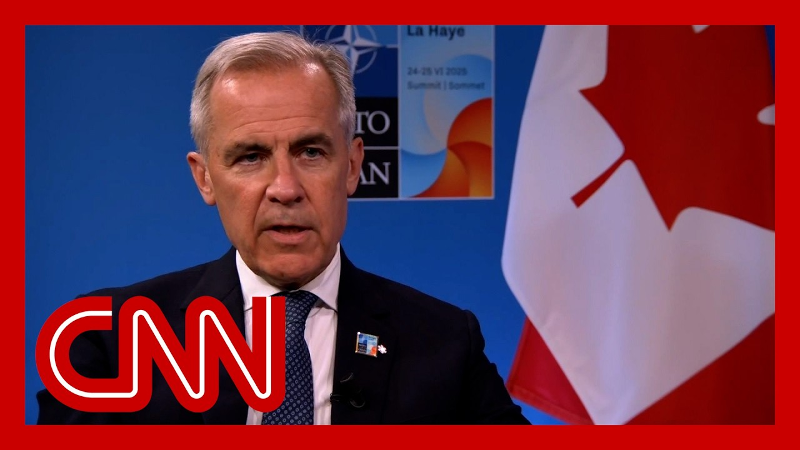

【2025-06-25 CNN独家专访加拿大总理卡尼：特朗普是否仍在威胁吞并？】
Summary: The Canadian Prime Minister discusses the recent developments in Iran, the potential for diplomacy, and Canada's role in international cooperation, while addressing concerns about U.S. leadership and the situation in Gaza.
摘要： 加拿大总理讨论了伊朗的最新动态、外交的可能性以及加拿大在国际合作中的作用，同时回应了关于美国领导力和加沙局势的担忧。

⏱️ Estimated Reading Time: 32 min
📚 六级生词 📚 雅思生词 📚 托福生词 📚 专八生词 📚 SAT生词 📚 考研生词 📚 GRE生词 📚 高考生词
Prime Minister Carney, welcome to the program.
卡尼总理，欢迎参加节目。
Thanks for having me.
谢谢邀请。
There is clearly Iran that's going to be dominating to a great extent, your summit of world leaders, the first time we've all got together since this war in the Middle East.
伊朗显然将在很大程度上主导这次世界领导人峰会，这是自中东战争爆发以来我们首次聚首。
I want to know from your perspective, and you've talked to President Trump.
我想从您的角度了解，您与特朗普总统谈过。
Where do you think it is now?
您认为现在情况如何？
Is the war over?
战争结束了吗？
Well, there has been, obviously significant developments in recent days, in recent hours.
显然，最近几天、最近几小时发生了重大进展。
The position of Iran has been, substantially degraded, both in with respect to, airspace, potentially, significantly, with respect to, their nuclear, capabilities or development of their nuclear capabilities.
伊朗的地位已大幅削弱，无论是在空域方面，还是在其核能力或核能力发展方面。
And that's created a window for this cease fire as we're talking today.
这为今天的停火创造了机会。
As the president President Trump has, has declared a cease fire.
特朗普总统已宣布停火。
We'll see how it holds.
我们将观察其持续性。
The recent Iranian action, as you know, was consistent with leading up to, actual de-escalation.
如您所知，伊朗最近的行动符合实际降级的趋势。
So, again, as we're here today, it's promising, but, much more needs to happen.
因此，今天的情况是积极的，但仍需更多努力。
What do you make of the Iranian response?
您如何看待伊朗的回应？
I mean, there was literally everybody on the edge of their seats as to whether this was going to be massive and trigger another massive U.S. retaliation.
当时所有人都紧张不安，担心这会引发大规模冲突并招致美国的强烈报复。
In the end, it was, in their words, proportional and in President Trump's words, kind of a weak response.
最终，伊朗称之为“适度”，而特朗普总统则称之为“软弱”的回应。
And he actually thanked the Iranians for even giving them all a heads up.
他甚至感谢伊朗提前发出警告。
So they got everybody out of harm's way.
因此，所有人都得以避开危险。
You know, there's a lot of noise in that part of the world condemning the violation of, you know, Qatar's, airspace and its sovereignty.
该地区有许多声音谴责对卡塔尔领空和主权的侵犯。
But really, what do you think is is happening diplomatically?
但您认为外交层面正在发生什么？
What are people thinking about this moment?
人们对当前局势有何看法？
I think see, military action.
我认为，军事行动。
I would lean towards President Trump's, interpretation of it.
我更倾向于特朗普总统的解读。
The military action was also a diplomatic move by Iran.
军事行动也是伊朗的外交手段。
It was, I mean, we never welcome, obviously, hostilities and reactions, but it was proportionate.
我们显然不欢迎敌对和报复，但这是适度的。
It was de-escalate.
这是降级之举。
It appears to have been previewed, which allowed in their Canadian soldiers at the Katari base, as well.
似乎事先已有预告，这也让卡塔里基地的加拿大士兵得以撤离。
Did you get them out of harm's way?
您让他们避开了危险吗？
They were out of harm's way, you know.
他们已避开危险。
So it's par for the course, really.
这是意料之中的事。
And it's gives, as far as you're concerned, an opening for diplomacy.
对您而言，这为外交打开了机会。
It gives an opening for diplomacy.
这为外交创造了机会。
I think that's the right way to put it.
我认为这样表述是恰当的。
And and the question is, does that diplomacy really get traction and move to, ending, this risk of nuclear proliferation?
问题是，这种外交能否真正取得进展并消除核扩散风险？
And does it lead as well to broader, well, a broader cease fire, in the Middle East, including in Gaza.
它是否还能促成更广泛的停火，包括加沙在内的中东地区？
I'm going to get to Gaza because I know it's incredibly important to you and to so many people around the world.
我将谈到加沙，因为我知道这对您和全球许多人至关重要。
But just on this issue, President Trump at one point posted about, hey, why not regime change if they can't make this, you know, what do you call it, make Iran great again?
但就这一问题，特朗普总统曾发文称，如果他们不能让伊朗再次伟大，为什么不换政权？
Why not change regime?
为什么不换政权？
Israel looked like it was really going for regime targets.
以色列似乎确实瞄准了政权目标。
And a lot inside, frankly densely populated areas like the capital Tehran.
而且很多目标位于人口密集地区，如首都德黑兰。
And they said to give a space, at least for people to rise up and take their own destiny into their own hands.
他们表示，至少给人民空间，让他们奋起掌握自己的命运。
Is that something you would have supported?
您会支持这种做法吗？
Did you support it?
您支持吗？
I know you talked to President Trump on the phone during all this.
我知道您在此期间与特朗普总统通过电话。
Well, look, we're not a, an active participant in this, in these hostilities.
我们并未积极参与这些敌对行动。
Maybe that's an obvious point, but I'll just state that to begin with.
这或许显而易见，但我先说明这一点。
We very much have had a consistent position over many years, that Iran cannot be allowed to have, nuclear weapons.
多年来，我们一直坚持伊朗不能拥有核武器的立场。
We see that events are making that much, much less likely, and that diplomacy taking its course.
我们认为事态发展使这种可能性大大降低，外交正在发挥作用。
That's the responsibility of the Iranian regime as it is.
这是伊朗政权的责任。
They would serve the Iranian people well, at a minimum to take, the nuclear option off the table for Iran.
他们至少应为伊朗人民考虑，放弃核选项。
Do you see a way because they insist on having, nuclear capacity and certainly civilian nuclear reactors.
您是否看到途径？因为他们坚持拥有核能力，尤其是民用核反应堆。
Do you see a way?
您是否看到途径？
Has anybody informed Canada yourself about the way to do that?
是否有人向加拿大通报过实现这一目标的方法？
Well, I think that the reaction of Iran and some of its, partners or allies, has revealed that, the nefarious nature of much of its nuclear program.
我认为，伊朗及其部分伙伴或盟友的反应揭示了其核计划的邪恶本质。
I mean, there was there was a fiction, that they perpetrated, that this was for only peaceful means.
他们编造的谎言称这只是为了和平目的。
So you you don't believe the intelligence that they had not made a decision to go for a bomb?
因此，您不相信情报显示他们尚未决定制造核弹？
Well, there they were.
他们确实如此。
Enriching uranium to a degree.
将铀浓缩到一定程度。
There were hiding the facilities are trying to hide the facilities, over many, many years on a path that created.
多年来，他们一直在隐藏或试图隐藏设施，走上了一条不必要的道路。
That was not necessary.
这完全没有必要。
That was entirely not necessary for civilian use of, of nuclear technology.
这对民用核技术完全没必要。
So, I think the combination of that, the combination of their belligerence, the combination of their state sponsor of terrorism, throughout the region, all of that points in one direction.
因此，我认为这些因素加在一起——他们的好战、对恐怖主义的国家支持——都指向一个方向。
And the reaction to the U.S. action also revealed, the, the intent, to create that ability, the Iranian attempt to create that ability to have nuclear weapons.
对美国行动的反应也揭示了伊朗试图获得核武器的意图。
Yes.
是的。
That's that's I think it's pretty clear, just in public domain, information, and, and words, including words of, the Russian allies.
我认为这非常清楚，从公开信息、言论，包括俄罗斯盟友的言论中可以看出。
And how seriously, then, do you take the desire to to go to negotiations to resolve this peacefully?
那么，您如何看待通过谈判和平解决这一问题的意愿？
Because that's what they said they thought they were doing when Israel started.
因为以色列行动时，他们声称正在这样做。
Well, well, they again, we weren't party to the negotiations, but, they hadn't, Iran had not proceeded with the final phase of those negotiations prior to this action.
我们并未参与谈判，但伊朗在此行动前未推进谈判的最后阶段。
We were not we didn't know the Israeli action was going to happen.
我们不知道以色列会采取行动。
To be absolutely clear.
绝对明确地说。
How likely is it?
可能性有多大？
I mean, this is speculative.
这是推测性的。
But the facts on the ground have changed.
但实际情况已改变。
The risk calculation, for the Iranian regime has to have changed, the clarity about what their intentions were on, with respect to their nuclear program, I think has changed.
伊朗政权的风险评估必然已改变，其核计划的意图也更加清晰。
I'm not surprised by that, but it has changed.
我并不意外，但确实已改变。
All of that should point to, a resumption of negotiations to denuclearize.
所有这些都应指向恢复无核化谈判。
Iran.
伊朗。
Let's move on to Canada's desire, because you said a lot Canada will lead.
让我们谈谈加拿大的意愿，因为您多次提到加拿大将发挥领导作用。
You want to to help lead form new coalitions.
您希望帮助领导组建新联盟。
You've said, in fact, if the United States no longer wants to lead, Canada will try to build a coalition of like minded nations with like minded values, etc. and who believe in international cooperation.
您曾说，如果美国不再想领导，加拿大将尝试与志同道合、相信国际合作的国家组建联盟。
What does that look like?
这会是什么样子？
And is that something that will trigger President Trump into more anger?
这是否会激怒特朗普总统？
He's already got these tariffs and he's already said if you guys essentially try to gang up on me, you'll have to pay for it even more dearly.
他已实施关税，并表示如果你们联合对抗他，代价将更惨重。
I think we have to look at this, in the way we would like to lead the way, the European Union would like to lead, number of Asian countries as well.
我认为我们应以我们希望领导的方式看待此事，欧盟和一些亚洲国家也希望如此。
Is in a positive respect.
这是积极的。
If the US is pulling back from multilateralism as it is, with respect to trade, these are effectively U.S trade policies now bilateral.
如果美国正从多边主义退缩，转向双边贸易政策。
If the US is pulling back, there are others of us who do believe in multilateralism.
如果美国退缩，我们其他人仍相信多边主义。
So, as you know, literally, I'm coming here in the last 12 hours ago, I was in Brussels, agreeing at the Canada EU summit, agreeing a very comprehensive partnership and a process to have an ever closer economic, defense and security partnership between Canada and the EU.
如您所知，12小时前我刚在布鲁塞尔参加加欧峰会，达成了一项全面伙伴关系协议，推动加欧经济、防务和安全合作更紧密。
That is an example of to jurisdictions in the case of the EU, that believe in multilateralism, believe in the rule of law, believe and believe in fair and open trade, believe in defense cooperation.
这是欧盟等司法管辖区相信多边主义、法治、公平开放贸易和防务合作的例证。
So that's an example of leadership, if you will.
这是领导力的体现。
That's positive.
这是积极的。
It's not a repeat.
这不是重复。
It's it's a reaction, if you will, to what's happening in the United States.
这是对美国现状的回应。
But it's not a reaction against the United States.
但这不是针对美国的反应。
It's for something not against, but President Trump tends to be a transactional and be very personal.
这是为了某事，而非反对，但特朗普总统往往交易性很强且非常个人化。
And sometimes he thinks, well, maybe, you know, differently.
有时他可能有不同想法。
But do you think they say to you, the Trump whisperer of the leaders, I'm not that you I'm texting you no relations with him and you're constantly talking.
但您是否被称为“领导人的特朗普耳语者”？您与他频繁交谈。
So is he still saying he wants to annex Canada?
他是否仍说要吞并加拿大？
He's not he's not, he admires Canada.
他没有，他欣赏加拿大。
I think it's fair to say, and, maybe for a period of time coveted, Canada.
可以说，他曾一度觊觎加拿大。
But, you've put that to bed.
但您已平息此事。
Well, look, we're two sovereign nations who are discussing, the future of our trade relationships, our defense, partnership, which has been very strong in the past.
我们是两个主权国家，正在讨论贸易关系和防务伙伴关系的未来，过去这些关系非常牢固。
How is that going to evolve?
这将如何发展？
But again, I would I would say it this way.
但我想这样说。
The, the the president is focused, on a series of bills of changing bilateral relations, where at NATO, he's been focused on making sure that all members, Canada included, of NATO, pay their fair share, carry their weight.
总统专注于通过一系列法案改变双边关系，在北约，他确保所有成员包括加拿大承担公平份额。
We I think we are now doing that.
我认为我们正在这样做。
We've made major, investments in defense in recent months.
最近几个月我们大幅增加了防务投资。
We're now at the NATO 2%.
我们已达到北约2%的目标。
We're committed to accelerating that.
我们承诺加快这一进程。
We've got this new defense partnership with Europe is another example.
我们与欧洲的新防务伙伴关系是另一个例子。
That's that's other countries stepping up.
这是其他国家在行动。
I don't see that that is at all I think I think that's positive.
我认为这是积极的。
We're doing it for our own reasons.
我们这样做有自己的理由。
But I think it's positive for the U.S. relationship.
但我认为这对美加关系是积极的。
Not, not something that, but is pretty sudden and is pretty overnight.
但这并非突然或一夜之间的事。
You know, the whole dumping you in the, you know, now we have to take care of our own security.
现在我们必须自己负责安全。
And not only that, we have to help prevent this increasing invasion by a hostile force in Europe, Russia, against, you know, a democratic, sovereign, independent state suddenly is will be landed on your lap.
不仅如此，我们还需帮助阻止俄罗斯在欧洲的入侵，突然之间，一个民主、主权独立国家的命运落在我们肩上。
So how realistic is it in a time when you already have economic difficulties?
在当前经济困难时期，这有多现实？
So to some, you know, Europe and others to actually you're at 2%, but now they want 3.5% and eventually 5%.
欧洲等国要求从2%提高到3.5%，最终5%。
Isn't that just going to cripple your budgets?
这是否会拖垮你们的预算？
It's well, it's it's important.
这很重要。
These are important questions.
这些问题很重要。
And it's important to be clear what we are potentially and I think, likely to, all agree tomorrow, which is and let's take the 5% of, of GDP figure, which is a big, huge, big number.
我们需要明确明天可能达成一致的内容，比如占GDP5%的目标，这是一个巨大数字。
How much is it actually for you?
对你们实际是多少？
5% of our GDP would be about $150 billion.
我们GDP的5%约为1500亿美元。
I mean, that's a lot.
这是很大一笔钱。
It's a lot of it's a lot of numbers per year.
每年都是巨额支出。
Per year.
每年。
That's a lot.
这很多。
Of course, it means that that's tough that you can't give to your own citizens.
当然，这意味着难以惠及本国公民。
Well okay.
好吧。
So let's start to let's let's start to bring it, you know, so part of it, a little more, a little less than a third of that overall number is spending on things that, quite frankly, we're already doing, to build the resilience of our economy.
其中略少于三分之一的支出已用于增强经济韧性。
So, it can be domestic resilience.
这可以是国内韧性。
It can be defending in areas that support defense but also support other things.
也可以是支持防务和其他领域的防御。
So I'll give an example.
举个例子。
Critical minerals.
关键矿物。
It is obvious, I think to everyone now, the risks that's run being fully dependent on China for critical minerals including rare earths, magnets and others, not just for defense industry, but for the auto industry and others.
完全依赖中国获取关键矿物（如稀土、磁铁等）的风险显而易见，不仅影响国防工业，还包括汽车工业等。
Canada has one of the biggest, and most varied deposits of critical minerals, which Trump was coveting.
加拿大拥有最大且种类最多的关键矿产储量之一，特朗普曾对此垂涎。
We are going to develop those.
我们将开发这些资源。
We're going to develop those and Canadian interests.
我们将开发这些资源并维护加拿大的利益。
We're going to develop some of them in, partnership with the European Union, itself and European Union member states with the UK, other other partners.
我们将与欧盟、欧盟成员国、英国及其他合作伙伴共同开发其中一部分资源。
some of the spending four that counts towards that 5%.
部分支出将计入那5%的目标。
in fact, a lot of it will count towards that 5% because infrastructure spending, its ports and railroads and other ways to get these, minerals out.
事实上，大部分支出将计入那5%，因为基础设施支出，包括港口、铁路和其他运输这些矿产的方式。
So that's something that benefits the Canadian economy, but is also part of our NATO.
因此，这不仅有利于加拿大经济，也是我们北约承诺的一部分。
our new, NATO responsibilities.
我们的新北约责任。
so I'm not I'm not trying to downplay it.
所以我并非试图淡化这一点。
I think the other thing I would say is where we sit today, collective we, NATO countries are likely to agree to the other component of that, that 2% going to the 3.5% in ten years.
我认为另一件事是，目前北约国家可能同意另一部分目标，即在十年内将2%提高到3.5%。
But the nature of warfare is changing very rapidly.
但战争的性质正在迅速变化。
we just look at what's happening in Ukraine.
我们只需看看乌克兰正在发生的事。
I mean, you don't need an aircraft carrier anymore.
我的意思是，你不再需要航空母舰了。
Well, some do, but most of us don't.
好吧，有些人需要，但大多数人不需要。
you need drones, and and you need the integration of drones with, with, your cyber capability, your broader, satellite capabilities.
你需要无人机，并且需要将无人机与你的网络能力和更广泛的卫星能力整合。
We're making a commitment, but we're not locking ourselves in.
我们正在做出承诺，但不会束缚自己。
we're not signing a bunch of postdated checks for the hardware military hardware of today to protect our citizens.
我们不会为今天的军事硬件签署一堆远期支票来保护我们的公民。
Talking about Ukraine, which is the war, in Europe and the existential war, frankly, as Europeans see it.
谈到乌克兰，这是欧洲的战争，坦率地说，欧洲人认为这是一场关乎存亡的战争。
Yeah.
是的。
And obviously, as Ukraine sees and you have a massive Ukrainian diaspora in Canada.
显然，乌克兰也这么认为，而且加拿大有庞大的乌克兰侨民。
And the world was incredibly on Ukraine's side for so long.
世界长期以来一直坚定支持乌克兰。
It's almost like now it's an afterthought.
现在几乎像是事后才想到的。
President Zelensky was essentially, I'm going to say these words stood up by President Trump at your G7.
泽连斯基总统基本上，我要说这些词，被特朗普总统在G7峰会上冷落了。
I mean, Trump left before you even met, Zelensky.
我的意思是，特朗普在你甚至见到泽连斯基之前就离开了。
I don't know whether he's coming and they're going to meet here.
我不知道他是否会来，他们是否会在这里见面。
But if the United States walks away, don't you think Russia will win?
但如果美国退出，你不认为俄罗斯会赢吗？
No. the short answer.
不，简短回答。
No, I think.
不，我认为。
Can you make up for the weapons that.
你们能弥补那些武器吗？
Well, we can't fully make up, but we can.
好吧，我们无法完全弥补，但我们可以部分弥补。
first off, I don't think the U.S is going to, quote, walk away.
首先，我不认为美国会“退出”。
Do you think it'll keep do you think some will keep giving weapons to Ukraine?
你认为他们会继续向乌克兰提供武器吗？
leave that to, the US to, the US to determine.
这由美国来决定。
But there's other measures that can be taken.
但还有其他措施可以采取。
So, first off, have we forgotten about Ukraine?
所以，首先，我们是否忘记了乌克兰？
Absolutely not.
绝对没有。
as you just mentioned, President Zelensky was, at the G7.
正如你刚才提到的，泽连斯基总统出席了G7峰会。
At the G7, Canada announced a major package of, new financial sanctions against Russia.
在G7峰会上，加拿大宣布了对俄罗斯的一揽子新金融制裁。
Major defense, support, major, support for the Ukraine budget.
重要的国防支持，对乌克兰预算的重要支持。
The, the European Union, is launching its 18th package of sanctions, which will have very significant impacts on the financial sector in Russia.
欧盟正在推出第18套制裁方案，这将严重影响俄罗斯的金融部门。
there is not the U.S., which is U.S, there is a sanction package working its way through the Senate.
美国并非没有行动，有一项制裁方案正在参议院审议中。
Lindsey Graham is sponsoring that.
林赛·格雷厄姆正在推动该方案。
and if it is enacted, which is a choice, but it will be a game changer.
如果它被通过，这将是一个选择，但会改变游戏规则。
so the U.S, even without military military is hugely important here.
因此，即使没有军事支持，美国在这里也非常重要。
It is a what are you going to try to persuade Trump to keep supporting Ukraine military militarily?
你是否会尝试说服特朗普继续在军事上支持乌克兰？
Yes.
是的。
Yes, absolutely.
是的，绝对会。
Because look, it is it's not yes.
因为你看，这不仅仅是。
We have a diaspora and it's of course that's important.
我们有侨民，这当然很重要。
And there's personal, ties.
还有个人联系。
but this is about rule of law.
但这是关于法治的。
It's about territorial integrity.
这是关于领土完整的。
It's about support for democracy.
这是关于支持民主的。
and it has much it does have those wider implications.
而且它确实有更广泛的影响。
It's also, it has real security implications for much of Europe.
它还对欧洲大部分地区有实际的安全影响。
We are at NATO.
我们在北约。
we have, under article five, we have responsibilities to each other.
根据第五条，我们对彼此负有责任。
We take those responsibilities seriously.
我们认真对待这些责任。
That's why we're here.
这就是我们在这里的原因。
So there's many, many factors.
所以有很多很多因素。
Personally, I think in Canada we we would stop at start and stop at the human.
就我个人而言，我认为在加拿大，我们会从人道出发并止于人道。
We don't need all those other, responsibilities, in order to, supplement, or to make the case for supporting Ukraine, perhaps in the United States, a few other jurisdictions, they need all of those elements, but those elements exist.
我们不需要所有那些其他责任来补充或为支持乌克兰辩护，也许在美国和其他一些司法管辖区，他们需要所有这些因素，但这些因素确实存在。
and so, yes, we will make a very strong case to, the president.
因此，是的，我们将向总统提出非常有力的理由。
I want to circle back to what we started talking about, the Middle East and what you brought up, which is Gaza.
我想回到我们最初讨论的中东问题和你提到的加沙。
Do you think there is any way that there can be the kind of peace that people are talking about now in the Middle East, if there isn't a resolution first to the Gaza catastrophe and second, in general to the Israel Palestinian crisis, trying to get a state for the Palestinians that lives in harmony, peace and security for all and freedom.
你认为如果首先不解决加沙的灾难，其次不解决巴以危机，试图为巴勒斯坦人建立一个与所有人和谐共处、和平、安全和自由的国家，中东现在人们谈论的那种和平有可能实现吗？
How much do you think you're all committed to that?
你认为你们对此有多大的承诺？
And what will you do?
你们会做什么？
What what strikes you is the most important thing to do next?
你认为下一步最重要的事情是什么？
Well, I think when you have first, your the core question, can there be a lasting peace in the Middle East without, peace in Gaza?
好吧，我认为首先，你的核心问题是，如果没有加沙的和平，中东能有持久的和平吗？
that that, takes into account Gaza in West Bank, effectively working on, on a path to a Palestinian state.
这需要考虑加沙和西岸，切实推进巴勒斯坦建国的道路。
You've used several adjectives.
你用了几个形容词。
I would, agree with all of those.
我同意所有这些。
And living side by side in security with, with Israel, you know, a Zionist, if you will, Palestinian state that recognizes the right, of Israel to exist not just to exist, but to prosper and not live in fear.
并与以色列安全地共存，你知道，一个犹太复国主义，如果你愿意的话，巴勒斯坦国承认以色列不仅存在而且繁荣且不必生活在恐惧中的权利。
Now, we can't have peace unless we we we move, towards that.
现在，除非我们朝着这个方向努力，否则我们无法实现和平。
second point developments as we sit today in the potential trajectory with respect to Iran does create another window for that.
第二点，就目前伊朗的潜在轨迹而言，确实为此创造了另一个窗口。
In fact, only, eight days ago, nine days ago at the G7, we all agreed, President Trump included, that resolution of the crisis with Iran should be accompanied by a broader reduction of hostilities in the region, including these are exact words, including a cease fire in Gaza.
事实上，就在八九天前的G7峰会上，我们都同意，包括特朗普总统在内，解决伊朗危机应伴随着该地区更广泛的敌对行动减少，包括这些确切的话，包括加沙的停火。
Does that mean that President Trump could use his leverage on Israel to actually go to a meaningful, plan, which was in the offing before Trump was inaugurated for the Israeli forces to come out for an Arab force and internationals to to go in and to start reasonable conversation.
这是否意味着特朗普总统可以利用他对以色列的影响力，真正实施一个有意义的计划，该计划在特朗普就职前就已酝酿，即以色列军队撤出，阿拉伯部队和国际部队进入并开始合理对话。
Let's, let's start with the start with the basics.
让我们从基础开始。
Given the dire situation there, in in Gaza, which is, the siege, the need for a cease fire now, a full resumption, I know there's some, but a full resumption of humanitarian aid.
考虑到加沙的严峻局势，即围困，现在需要停火，全面恢复人道主义援助，我知道有一些援助，但需要全面恢复。
and then moving forward from that, I'm not jumping all the way to, a broader peace plan and, you know, accompanying to this, lest anyone think I'm not acknowledging this, is, is releasing the hostages and there is the prospect, the possibility of that created again in the current circumstances.
然后从此向前推进，我并不是直接跳到更广泛的和平计划，你知道，伴随这一点，以免有人认为我没有承认这一点，是释放人质，在当前情况下，这再次成为可能。
So the question is to keep the focus on that and move forward, if at all possible.
所以问题是尽可能集中精力于此并向前推进。
Mr. Prime Minister, the hostages have not been released except through a ceasefire and negotiations.
总理先生，人质只有在停火和谈判后才能被释放。
The last batches of hostages who were released will, under those circumstances in Israel itself, like the former prime minister Ehud Olmert, former defense minister Moshe Ya'alon, former, security and intelligence and defense and security establishment of beginning and saying loudly that Israel needs to stop this trajectory in Gaza because it's leading to war crimes and Olmert said war crimes are being committed.
最后一批被释放的人质将在以色列国内的情况下，如前总理埃胡德·奥尔默特、前国防部长摩西·亚阿隆、前安全和情报及国防和安全机构的成员大声疾呼，以色列需要停止在加沙的这种轨迹，因为这会导致战争罪行，奥尔默特说战争罪行正在发生。
you have said that you strongly oppose the expansion of the operations in Gaza.
你曾表示强烈反对扩大在加沙的行动。
The level of human suffering is intolerable.
人类的苦难程度是无法容忍的。
Do you believe, like many in the international community, that the siege preventing food, medicine, water and all the rest of it should be prosecuted as war crimes?
你是否像国际社会许多人一样认为，阻止食物、药品、水和其他一切的围困应被起诉为战争罪行？
And I know your police, Royal Mounted Police are investigating some aspects of that.
我知道你的警察，皇家骑警正在调查其中的一些方面。
Well, the first, where we're we're focused is, is using this opportunity the extent to which we have influence using this opportunity, if I can term it that way.
好吧，首先，我们关注的是利用这个机会，在我们有影响力的范围内利用这个机会，如果我可以这样说的话。
And I think it is an opportunity, to establish, reestablish the cease fire, in Gaza, reestablish the full resumption of humanitarian aid.
我认为这是一个机会，在加沙建立、重建停火，全面恢复人道主义援助。
We're also focused on, stopping the, the violence in the West Bank and the encroachments in the West Bank, which is why we, took action, alongside a number of other countries, against, some cabinet ministers of the extreme right.
我们还专注于阻止西岸的暴力和侵占，这就是为什么我们与其他一些国家一起对极右翼的一些内阁部长采取了行动。
Yeah, who are actually have been actively, fomenting and, and perpetrating that.
是的，他们实际上一直在积极煽动和实施这些行为。
So focus on that immediate aspect in order to start to build back.
因此，专注于这一直接方面，以便开始重建。
And do you think President Trump, I know you said that you will sign this communique in the G7, but, you know, President Trump, I think he's defined by uncertainty.
你认为特朗普总统，我知道你说过你将在G7签署这份公报，但你知道，特朗普总统，我认为他的特点是不确定性。
We don't really know what he's going to say next.
我们真的不知道他接下来会说什么。
Do you think, that he is really I mean, in your private conversations or your conversations?
你认为，他真的——我是说，在你的私人谈话或你们的谈话中？
Is he committed?
他是否承诺？
to to relieving this situation in the Middle East in a fair and just way?
以公平公正的方式缓解中东局势？
Well, I think, he, he has the potential to be decisive, in the situation, he's used, his influence and U.S. power in other situations.
好吧，我认为，他有潜力在这一局势中发挥决定性作用，他在其他情况下使用了他的影响力和美国的力量。
We've just seen, seen it in Iran.
我们刚刚在伊朗看到了这一点。
and again, to repeat myself, it does create the possibility of moving forward here.
再次重复，这确实为在这里取得进展创造了可能性。
And, look, there is a moral imperative.
而且，看，这是一种道德义务。
to move forward.
向前推进。
There's also an imperative, as you intimated in a question earlier, about the pathway to ultimate peace, this is not going to lead to ultimate peace in the region unless Gaza is stabilized and then ultimately on a path towards a Palestinian state.
还有一种必要性，正如你早前在一个问题中暗示的，关于最终和平的道路，除非加沙稳定下来并最终走上巴勒斯坦建国的道路，否则这不会导致该地区的最终和平。
Well, on that note, thank you for joining us.
好吧，就此而言，感谢你加入我们。